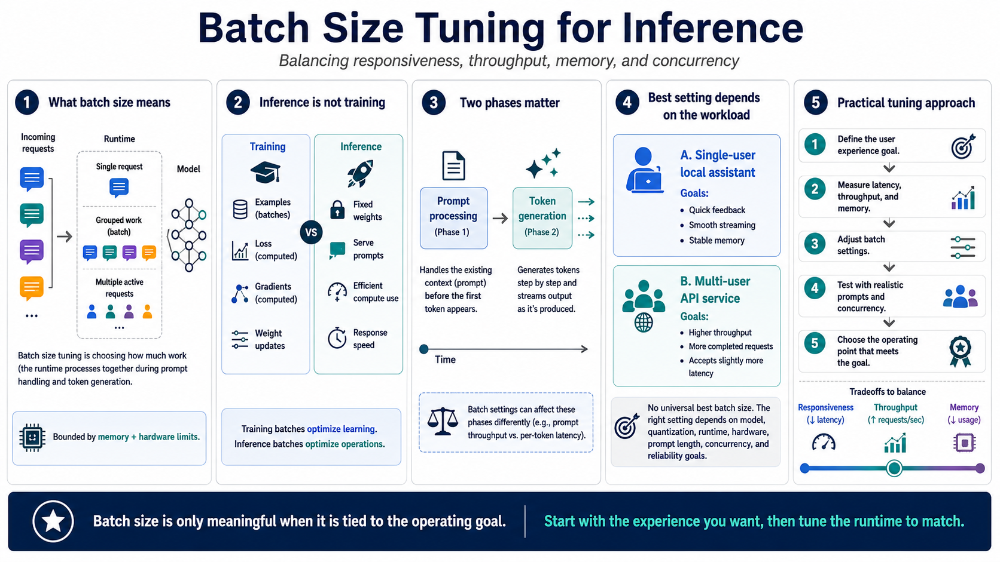

What Batch Size Means in LLM Inference
Connecting to LMS... Progress: in progress

Narration
Batch size tuning for inference is the practice of choosing how much work the runtime should process together when it serves prompts and generates tokens. It sounds simple, but it sits at the intersection of model size, context length, memory, hardware, and user expectations. In practical terms, batch settings decide whether the system handles one request at a time, groups pieces of work together, or keeps multiple active requests moving through the model at once.
This is different from training batch size. During training, a batch is tied to examples, loss calculation, gradients, and weight updates. During inference, the model weights are already fixed. The question becomes operational: how can the runtime use available compute efficiently while still returning useful responses quickly? A setting that makes sense for training documentation may not translate directly to a chat server or a local assistant.
It also helps to separate prompt processing from token generation. When a prompt is submitted, the runtime has to process the existing context before the first new token appears. After that, generation usually happens step by step. Batch settings can affect these phases differently, so a configuration that improves prompt ingestion may not produce the smoothest streaming response.
The right answer depends on the workload. A single-user local coding assistant usually values responsiveness and stable memory use. A multi-user API service may accept slightly more latency if it can increase total throughput. There is no universal best batch size because the best operating point changes with model architecture, quantization, runtime, hardware, prompt length, concurrency, and reliability goals.
A practical way to think about this is to start with the user experience you want, then work backward to the runtime settings. If the system is a private assistant, the tuning target may be quick feedback and steady streaming. If it is an internal API, the target may be more completed requests per minute. Batch size is only meaningful when it is tied to one of those operating goals.